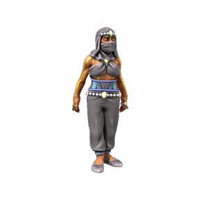

Kash Suraska
She/Her, Kasharite Elf
Mother of the Sultan, administers the Sultan's harem and gives counsel to new concubines. An experienced negotiator and respected political figure, the Celebrated Mother holds more power through her influence than the limited nature of her role would suggest.
